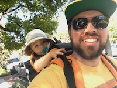

About Me

In West Philadelphia, born and raised, but on a computer, I spent most of my days. I attended Powell Elementary School, Julia R. Masterman Middle School, and Central High School (which is actually in North Philadelphia). After finishing high school, I attended Drexel University for Computer Science and Temple University for Political Science & International Relations. I held a variety of jobs while living in Philadelphia, including catering work, babysitting, IT support for the Philadelphia Streets Department and freelance IT work, a licensed Realtor, a server for an Italian restaurant, and a cook for a cafe.
About 10 years ago, I realized I wanted to escape the hot summers and cold, dreary winters of Philadelphia and so I decided to move to warm and sunny San Francisco instead! (It turns out the Sunset in July can be quite cold in shorts and t-shirts, whoops!) Once I arrived, I held a variety of jobs including canvassing for Environment California, working at a Mediterranean restaurant, and others. I eventually ended up working at the local cafe chain La Boulange, now known as La Boulangerie de San Francisco. I started as a cashier, but I quickly learned the other aspects of the cafe, and in time worked as a supervisor, assistant manager, and general manager before taking on more IT tasks and moving to the central office to work as an Operations Specialist. When La Boulange was closed by Starbucks, I was re-hired as the Operations Manager to help oversee the re-opening of 5 cafes (now 8). I left La Boulangerie de San Francisco this year in order to change careers and pursue my dream of becoming a web developer.
Along the way, I met my wife Jessica, an Elementary school teacher, while playing soccer in Golden Gate Park. We got married in 2015, and now have a son named Wesley, almost 2 years old, who now makes many of our decisions for us! We live in the Rockridge area of Oakland.